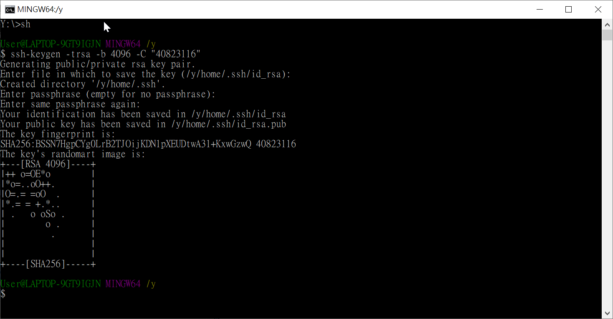
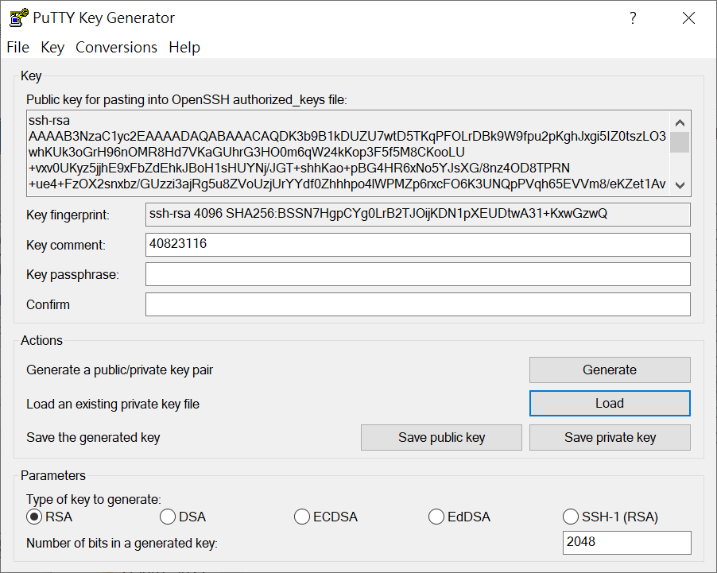
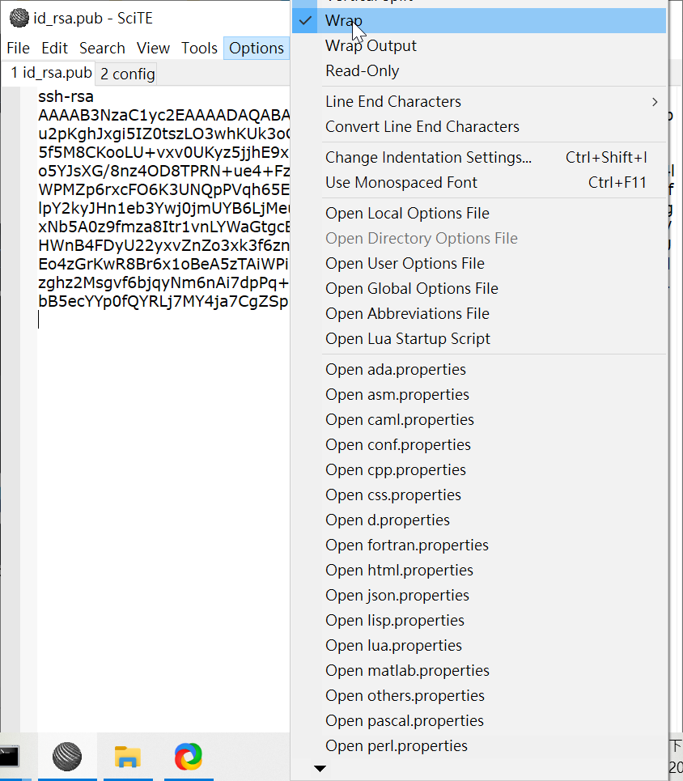
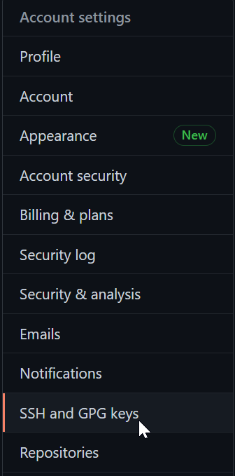
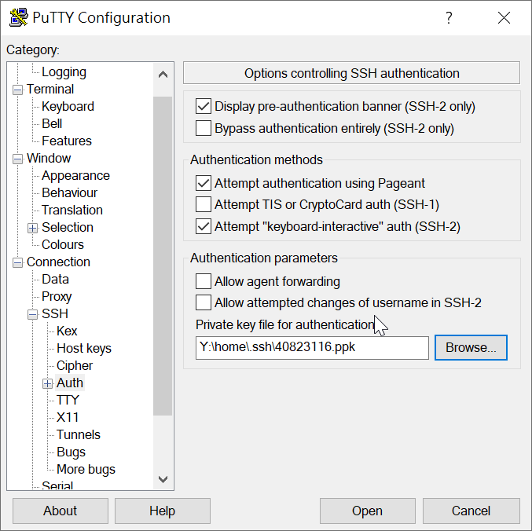
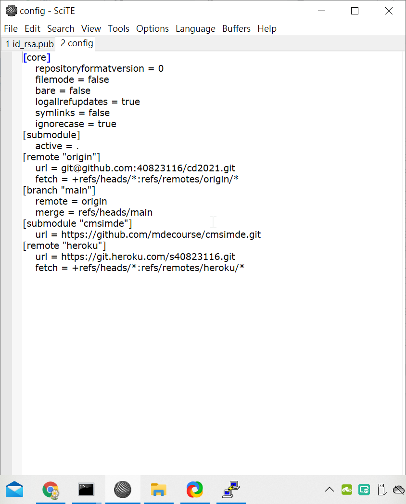

W10-W11 <<
Previous task1
作業ㄉ程式
# open file, default is read mode, since txt content no chinese char
# no encoding = "UTF-8" is needed
with open("stage3_2a.txt") as fh:
# readlines will read into the whole line and put into 16 list format
# has \n at the end of each line
data = fh.readlines()
data = [a.replace('4823122','40823122') for a in data]
data = [b.replace('\t\t\t\t',' ') for b in data]
print(data)
for i in range(len(data)):
group = data[i].rstrip("\n").split("\t")
print('<p>'+group[0]+'|<a href="https://'+group[1]+'.github.io/stage3-ag'+group[0][9]+'">網站</a> | <a href="https://github.com/'+group[2]+'/stage3-ag'+group[0][9]+'">倉儲</a></p>')
for j in range(2,17,2):
try:
print('<p>'+group[j]+'|<a href="https://'+group[j]+'.github.io/cd2021">網站</a> | <a href="https://github.com/'+group[2]+'/cd2021">倉儲</a> | <a href="https://'+group[j]+'.github.io/stage3-ag'+group[0][9]+'">小組網站</a></p>')
except:
continue
# the following will use group data to generate needed html
完成品
stage3_ag1|網站 | 倉儲
40823131|網站 | 倉儲 | 小組網站
a40823112|網站 | 倉儲 | 小組網站
40823123|網站 | 倉儲 | 小組網站
40823145|網站 | 倉儲 | 小組網站
40823136|網站 | 倉儲 | 小組網站
40823109|網站 | 倉儲 | 小組網站
40823116|網站 | 倉儲 | 小組網站
40823108|網站 | 倉儲 | 小組網站
stage3_ag2|網站 | 倉儲
40823151|網站 | 倉儲 | 小組網站
40623121|網站 | 倉儲 | 小組網站
40871106|網站 | 倉儲 | 小組網站
40823102|網站 | 倉儲 | 小組網站
40823104|網站 | 倉儲 | 小組網站
40823106|網站 | 倉儲 | 小組網站
40823101|網站 | 倉儲 | 小組網站
40823132|網站 | 倉儲 | 小組網站
stage3_ag3|網站 | 倉儲
40823119|網站 | 倉儲 | 小組網站
40823150|網站 | 倉儲 | 小組網站
40823103|網站 | 倉儲 | 小組網站
40823107|網站 | 倉儲 | 小組網站
40523252|網站 | 倉儲 | 小組網站
40823154 |網站 | 倉儲 | 小組網站
stage3_ag4|網站 | 倉儲
40823142|網站 | 倉儲 | 小組網站
40823144|網站 | 倉儲 | 小組網站
40823127|網站 | 倉儲 | 小組網站
40823148|網站 | 倉儲 | 小組網站
40823121|網站 | 倉儲 | 小組網站
40823135|網站 | 倉儲 | 小組網站
40823114|網站 | 倉儲 | 小組網站
40823146|網站 | 倉儲 | 小組網站
stage3_ag5|網站 | 倉儲
40823111|網站 | 倉儲 | 小組網站
40823115|網站 | 倉儲 | 小組網站
40823128|網站 | 倉儲 | 小組網站
40823120|網站 | 倉儲 | 小組網站
40823140|網站 | 倉儲 | 小組網站
40823124|網站 | 倉儲 | 小組網站
40823139|網站 | 倉儲 | 小組網站
40823126|網站 | 倉儲 | 小組網站
stage3_ag6|網站 | 倉儲
40823152|網站 | 倉儲 | 小組網站
40823110|網站 | 倉儲 | 小組網站
40823122|網站 | 倉儲 | 小組網站
40823125|網站 | 倉儲 | 小組網站
40823117|網站 | 倉儲 | 小組網站
40823129|網站 | 倉儲 | 小組網站
40823149|網站 | 倉儲 | 小組網站
40823153|網站 | 倉儲 | 小組網站
SSH
利用隨身系統輸入指令sh
輸入指令ssh-keygen -t rsa -b 4096 -C "學號"
預設的鑰匙儲存在y:\home\.ssh目錄裡

使用puttygen將private key(id_rsa)導入，save private key轉換為putty能夠讀懂的格式(.ppk)檔案
存好(.ppk)檔後

使用scite將public key (id_rsa.pub)打開，到工具列找到Options>Wrap就能看到完整檔案內容

將完整public key內容複製，進入github點擊settings，後點選SSH and GPG keys

點擊New SSH key，將複製的鑰匙貼上並儲存就可以使用了
SSH PuTTY的設定
選擇前面步驟所生成之.ppk檔案

回到Session點選save存檔，如果這台電腦只有自己使用的話，儲存後無特殊情況不需要重新設定此步驟
最後一步需要進入你要push的資料夾
進入Y:\tmp\你要push的資料夾\.git內修改config檔案
從[remote "origin"]下的url = https://github.com/40823116/cd2021.git改為
url = git@github.com:40823116/cd2021.git

W10-W11 <<
Previous